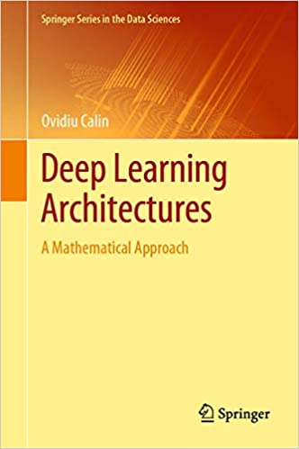

layout: true <div class="my-header"> <p class="align_left"><img src="images/yonsei_logo.png" style="height: 30px;"/></p> <p class="align_right"><b>ML Study Plan</b></p> </div> <div class="my-footer"> <p class="align_right"><b>2022.01.09 @ SYTEARK</b></p> <p class="align_left"><b>Tae Geun Kim</b></p> </div> --- class: center, middle # ML Study Plan <h4 style="color:brown">For 2022</h4> <h3 style="color: darkblue">Tae Geun Kim</h3> --- ## Table of Contents -- * Introduce Materials * Machine Learning (Overall) * Deep Learning * Advanced Theory -- * Specific Plans --- class: center, middle # Introduce Materials --- class: split-60 ### Two Pillars .center[ There are two legend books in phenomenology. ] -- .left-column[ .center[ <div id="boxshadow" style="width:60%"> <figcaption style="text-align: center;"><b>Fig.1 </b>Peskin</figcaption> </div> ] ] .right-column[ <div id="boxshadow" style="width:100%"> <figcaption style="text-align: center;"><b>Fig.2 </b>Schwartz</figcaption> </div> ] --- class: split-60 ### Two Pillars .center[ There are two legend books in ML. ] -- .left-column[ <div id="boxshadow" style="width:60%"> <figcaption style="text-align: center;"><b>Fig.3 </b>ESL</figcaption> </div> ] .right-column[ <div id="boxshadow" style="width:100%"> <figcaption style="text-align: center;"><b>Fig.4 </b>PRML</figcaption> </div> ] --- class: split-40 ### Two Pillars .left-column[ <div id="boxshadow" style="width:90%"> <figcaption style="text-align: center;"><b>Fig.3 </b>ESL</figcaption> </div> ] .right-column[ .center[ **The book from statisticians** ] * Linear methods for regression * Linear methods for classification * Basis expansions and regularization * Kernel smoothing methods * Model assessment and selection * Model inference and averaging * Additive models, trees, and related methods * Boosting and additive trees * Neural networks * Support vector machines and flexible discriminants * Prototype methods and nearest-neighbors * Unsupervised learning ] --- class: split-40 ### Two Pillars .left-column[ <div id="boxshadow" style="width:90%"> <figcaption style="text-align: center;"><b>Fig.4 </b>PRML</figcaption> </div> ] .right-column[ .center[ **The book from physicist** ] * Probability distribution * Linear models for regression * Linear models for classification * Neural networks * Kernel methods * Sparse kernel machines * Graphical models * Mixture models and EM * Approximate inference * Sampling methods * Continuous latent variables * Sequential data * Combining models ] --- class: split-40 ### And a successor .left-column[ <div id="boxshadow" style="width:90%"> <figcaption style="text-align: center;"><b>Fig.5 </b>MLAAP</figcaption> </div> ] .right-column[ .center[ **Combined, but practical** ] * Neurons, Neural Networks, and LDA * The Multi-layer Perceptron * Radial Basis Functions and Splines * Dimensionality Reduction * Probabilistic Learning * Support Vector Machines * Optimisation and Search * Evolutionary Learning * Reinforcement Learning * Learning with Trees * Decision by Committee: Ensemble Learning * Unsupervised Learning * Markov Chain Monte Carlo (MCMC) methods * Graphical Models * Symmetric Weights and DeepBelief Networks * Gaussian Processes ] --- class: split-60 ### A short book .center[ There are well-made short books in physics. ] .left-column[ <div id="boxshadow" style="width:60%"> <figcaption style="text-align: center;"><b>Fig.6 </b>Landau vol.1</figcaption> </div> ] .right-column[ <div id="boxshadow" style="width:90%"> <figcaption style="text-align: center;"><b>Fig.7 </b>Maggiore</figcaption> </div> ] --- class: split-40 ### A short book .left-column[ <div id="boxshadow" style="width:90%"> <figcaption style="text-align: center;"><b>Fig.8 </b>LFD</figcaption> </div> ] .right-column[ .center[ **From Caltech** ] * The Learning Problem * Training versus Testing * The Linear Model * Overfitting * Three Learning Principles ] -- .right-column[ .center[ and e-Chapters ] * Similarity-Based methods, * Neural Networks, * Support Vector Machines, * Learning Aides ] --- class: split-60 ### Two Pillars of Deep Learning .left-column[ <div id="boxshadow" style="width:60%"> <img src="images/goodfellow.jpg" alt="simple" style="width:100%"/> <figcaption style="text-align: center;"><b>Fig.9 </b>Goodfellow</figcaption> </div> ] .right-column[ <div id="boxshadow" style="width:90%"> <figcaption style="text-align: center;"><b>Fig.10 </b>Geron</figcaption> </div> ] --- ### And the boss from Amazon <div> <iframe src="https://d2l.ai/" style="width:100%;height:450px"></iframe> </div> --- class: split-40 ### Intermediate or High .left-column[ <div id="boxshadow" style="width:90%"> <figcaption style="text-align: center;"><b>Fig.11 </b>PDL</figcaption> </div> ] .right-column[ .center[ **Project Based & Modern Deep Learning** ] * 화상분류와 전이학습 (VGG) * 물체인식 (SSD) * 시맨틱 분할 (PSPNet) * 자세 추정 (OpenPose) * GAN을 활용한 화상 생성 (DCGAN, Self-Attention GAN) * GAN을 활용한 이상 감지 (AnoGAN, Efficient GAN) * 자연어 처리를 활용한 감정 분석 (Transformer) * 자연어 처리를 활용한 감정 분석 (BERT) * 동영상 분류 (3DCNN, ECO) ] --- class: split-40 ### Advanced .left-column[ <div id="boxshadow" style="width:90%"> <figcaption style="text-align: center;"><b>Fig.12 </b>PTPR</figcaption> </div> ] .right-column[ .center[ **4,709 cites** ] * The Bayes Error * Inequalities and Alternate Distance Measures * Linear Discrimination * Nearest Neighbor Rules * Consistency * Slow Rates of Convergence * Error Estimation * The Regular Histogram Rule * Kernel Rules * Consistency of the kNN * Vapnik-Chervonenkis Theory * Combinatorial Aspects of VC Theory * ... ] --- class: split-40 ### Advanced .left-column[ <div id="boxshadow" style="width:90%">  <figcaption style="text-align: center;"><b>Fig.13 </b>DLA</figcaption> </div> ] .right-column[ .center[ **A Mathematical Approach** ] * Activation Functions * Cost Functions * Finding Minima Algorithms * Abstract Neurons * Neural Networks * Approximation Theorems * Learning with One-dimensional Inputs * Universal Approximators * Exact Learning * Information Representation * Information Capacity Assessment * Output Manifolds * Neuromanifolds * Other Architectures ] --- class: center, middle # Specific Plans --- ### Plans * Once a week - 3 sessions in 4 hours * Theory of ML - LFD (+ MLAAP) with lots of homeworks * Practice DL - D2L by random presentation * Hands on Session - PDL -- * `+` Algorithm & Data Structures